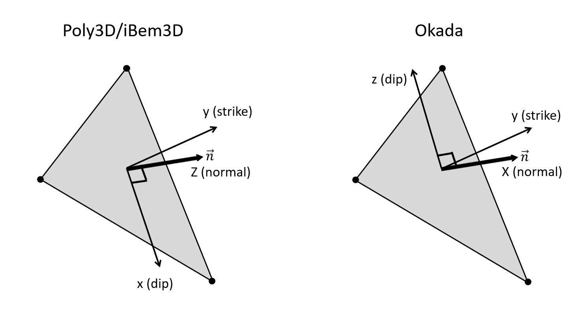

As opposed to Poly3D, we use the Okada convention where x-axis represents the normal direction of a triangular element, the y-axis the strike direction and the z-axis the dip-direction pointing upward for positive value:

As the convention is related to the triangular elements making the discontinuities, and specifically the displacement discontinuity also called Burger vector, you can switch from Okada to Poly3D (or any convention of your choise) by using the [[BurgerFilter]] class. Here is an example of using the filter while gathering the computed burger vectors from a surface discontinuity:
As opposed to Poly3D which is based on geologist convention (for which compression is positive), we use the engineer convention, i.e., where compression is negatif.
Any positive value is extension, not compression. Therefore, a normal to a joint will be parallel to the minimum compressive stress, i.e., the maximum eigen value $\sigma_1$, not the minimum $\sigma_3$ as in geologist convention.
Okada / Poly3D
As opposed to Poly3D, we use the Okada convention where x-axis represents the normal direction of a triangular element, the y-axis the strike direction and the z-axis the dip-direction pointing upward for positive value:
As the convention is related to the triangular elements making the discontinuities, and specifically the displacement discontinuity also called Burger vector, you can switch from Okada to Poly3D (or any convention of your choise) by using the [[BurgerFilter]] class. Here is an example of using the filter while gathering the computed burger vectors from a surface discontinuity:
Engineer / geologist
As opposed to Poly3D which is based on geologist convention (for which compression is positive), we use the engineer convention, i.e., where compression is negatif.
Any positive value is extension, not compression. Therefore, a normal to a joint will be parallel to the minimum compressive stress, i.e., the maximum eigen value $\sigma_1$, not the minimum $\sigma_3$ as in geologist convention.